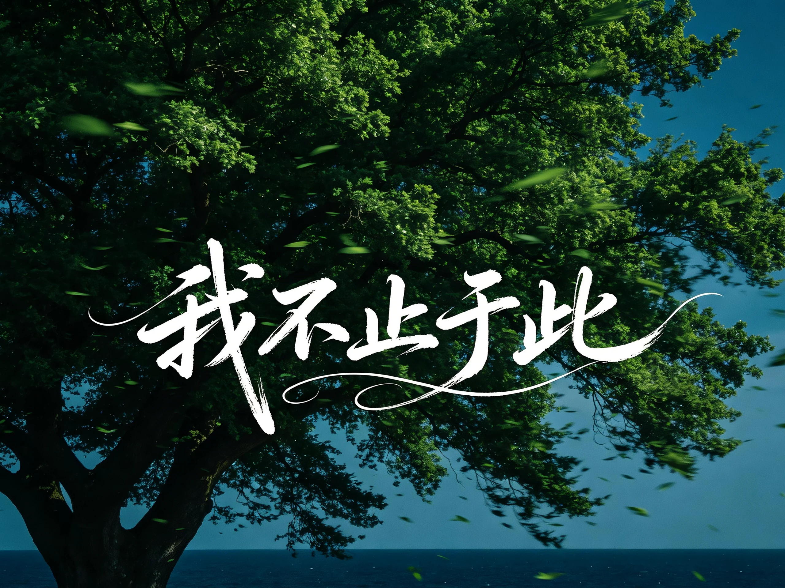

Beyond Science
生活，还有更多面向。
以摄影记录日常，以设计表达想法，也从东方审美中感受生活的细节。

Photography
用镜头留住日常的光影与细节，珍藏平凡生活中值得记住的片刻。
Design
掌握海报制作、公众号推送制作等多项设计性技能，在设计中体验美学带来的愉悦感。
Eastern Aesthetics
喜欢古风服饰与新中式风格，从形制、纹样与配色中感受传统文化的延续。
理性探索，也认真感受。